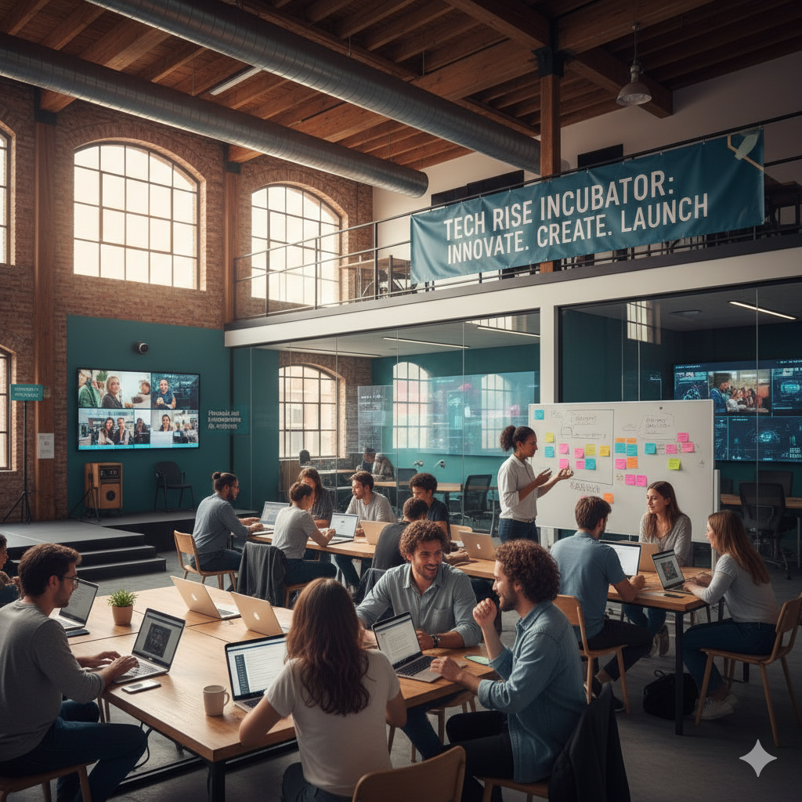
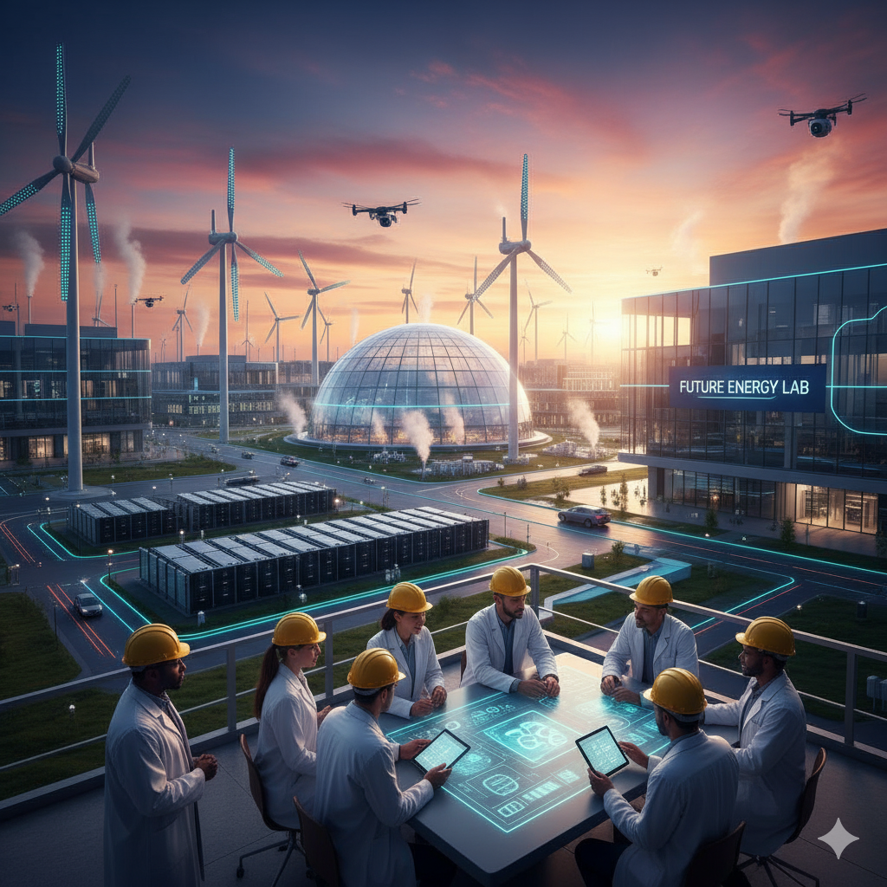

Ma personnalité
Je suis passionné, curieux de découvrir les nouvelles technologies et innovations. Créatif, je cherche toujours des solutions pour relever les défis. Dynamique, motivé et sérieux, je m’investis pleinement dans mes projets.
Je suis déterminé et persévérant, que ce soit pour mener à bien un projet ou apprendre de nouvelles compétences. Je valorise l’intégrité et la responsabilité, ce qui me permet de gagner la confiance de mes collègues.
Ouvert d’esprit, j’aime explorer de nouvelles idées et apprendre différentes cultures. Mon adaptabilité me permet de m’intégrer rapidement et de rester concentré sur mes objectifs. Je crois aussi au travail en équipe pour innover ensemble.
Enfin, je souhaite contribuer à un monde meilleur en m’engageant dans des projets à impact social et technologique, tout en continuant à apprendre et évoluer.
Mes Projets
Animé par une volonté constante d'innovation et d'impact social, je souhaite poursuivre mes efforts dans le domaine de la technologie et de la santé. Mon objectif est de développer des solutions toujours plus performantes et accessibles, afin d'améliorer la qualité de vie des individus et de contribuer à une société plus inclusive et durable. Voici un aperçu de mes aspirations et des projets que j'envisage de réaliser dans les années à venir :
-
Création d'une plateforme d'éducation numérique pour les enfants défavorisés :
- Développement d'applications d'intelligence artificielle pour la santé mentale :
- Création d'un incubateur pour jeunes entrepreneurs technologiques :
- Innovations dans l'énergie renouvelable :
Développer une plateforme éducative en ligne, accessible même dans les zones rurales ou sous-équipées, qui offre des ressources interactives et adaptées aux besoins des jeunes. Cette initiative vise à réduire la fracture numérique et à favoriser l'égalité des chances dans l'apprentissage.

Concevoir des outils basés sur l'IA pour aider à détecter précocement les troubles psychologiques et proposer des interventions personnalisées, en partenariat avec des professionnels de la santé. Ce projet souhaite rendre l'accompagnement psychologique plus accessible et préventif.
Mettre en place un espace où les jeunes innovateurs peuvent recevoir du mentorat, des formations, et un soutien financier pour lancer leurs projets. Favoriser l'entrepreneuriat jeune pour stimuler l'économie locale et encourager la créativité.
Participer à des projets de recherche et développement pour rendre les solutions énergétiques durables plus efficaces et abordables, contribuant ainsi à la lutte contre le changement climatique.
Ces ambitions reflètent ma volonté de continuer à apprendre, à innover et à agir concrètement pour un avenir meilleur. Je suis déterminé à transformer ces idées en réalités tangibles, en collaborant avec des experts, des institutions et des communautés engagées.